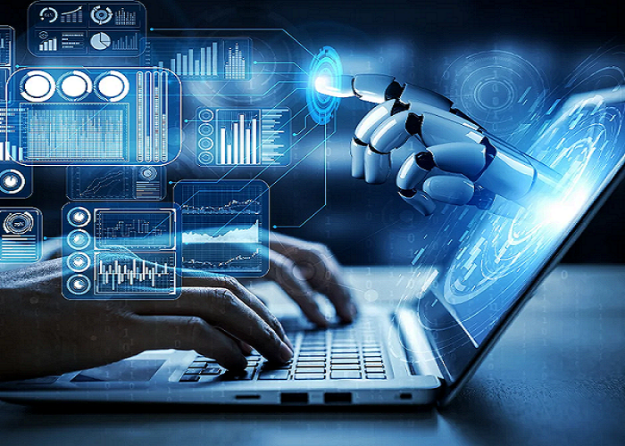
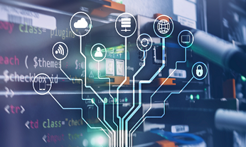

|  |
As novas tecnologias de computadores estão transformando rapidamente a forma como interagimos com a tecnologia e a maneira como ela é aplicada em diversas áreas. Uma das áreas mais promissoras é a computação quântica, que promete revolucionar o processamento de dados ao explorar os princípios da mecânica quântica. Ao contrário dos computadores tradicionais, que usam bits para representar informações como 0 ou 1, os computadores quânticos utilizam qubits, que podem representar múltiplos estados simultaneamente. Isso permite que eles resolvam problemas complexos muito mais rapidamente do que os computadores convencionais A inteligência artificial (IA) e o aprendizado de máquina continuam a avançar, oferecendo novas possibilidades para automação, reconhecimento de padrões e análise de grandes volumes de dados. Os algoritmos de IA estão se tornando mais sofisticados, permitindo desenvolvimentos em áreas como reconhecimento de voz, processamento de linguagem natural e visão computacional. A IA é cada vez mais integrada em aplicativos e dispositivos, desde assistentes pessoais como o Siri e o Alexa até sistemas de recomendação em plataformas de streaming. Outra inovação importante é o avanço dos processadores e hardware de computadores. Os processadores modernos, como os da linha AMD Ryzen e Intel Core, estão incorporando mais núcleos e threads, melhorando o desempenho e a eficiência energética. Além disso, a tecnologia de unidades de estado sólido (SSD) está substituindo os discos rígidos tradicionais, oferecendo velocidades de leitura e escrita muito mais rápidas, o que melhora significativamente o desempenho geral dos sistemas. A computação em nuvem tem se expandido enormemente, permitindo que indivíduos e empresas acessem recursos computacionais e armazenamento através da internet. Serviços como Amazon Web Services (AWS), Microsoft Azure e Google Cloud oferecem escalabilidade e flexibilidade, permitindo que empresas de todos os tamanhos possam alavancar tecnologias avançadas sem precisar investir pesadamente em hardware local. |
|
Além disso, a Internet das Coisas (IoT) está conectando uma vasta gama de dispositivos e sensores, permitindo a coleta e análise de dados em tempo real. Desde eletrodomésticos inteligentes até sistemas de gerenciamento de cidades, a IoT está transformando a forma como interagimos com o ambiente ao nosso redor. Os avanços na tecnologia de displays também são notáveis, com telas dobráveis e flexíveis começando a aparecer em smartphones e outros dispositivos, oferecendo novas formas de interação e usabilidade. A realidade aumentada (AR) e a realidade virtual (VR) estão criando experiências imersivas para entretenimento, treinamento e design, permitindo uma nova forma de explorar e interagir com o mundo digital. Essas novas tecnologias estão não apenas ampliando as capacidades dos computadores, mas também criando novas oportunidades e desafios, moldando o futuro da informática e da tecnologia de maneira significativa. |
 |